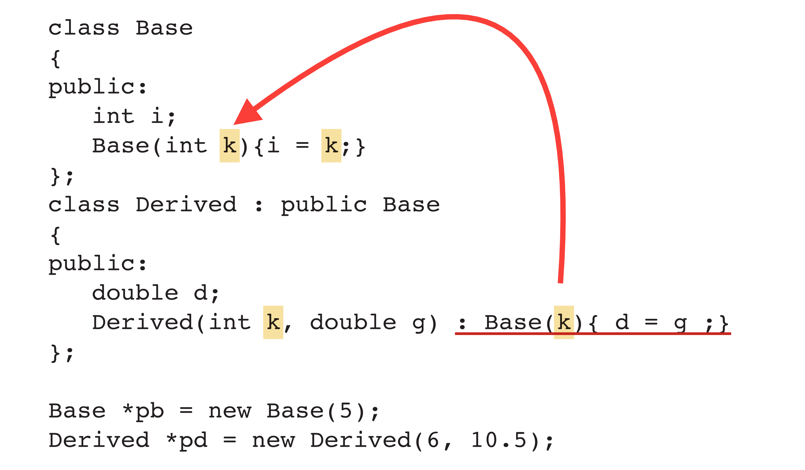

Inheritance
The idea that you can inherit members from other classes. Therefore, we have access to the member variables and member functions for another class.
The class that we are inheriting from is called the base class.
Another ways in which we could refer to classes involve in inheritance.
Base → Derived
Parent → Child
In other words, every time we want to allow other derived classes or child classes members from a base or a parent class, we can do it in the following manner:
class Daughter: public Mother{
public:
Daughter();
};
In our example, our Daughter class has access to all of the public functions of our Mother class.
We could easily access public member functions from the Mother class by using the dot . operator.
Daughter silvia;
silvia.sayName();
Although the sayName() function is a member function of the Mother class, inheritance allows us to call it directly using the dot . operator from an instance of the Daughter class.
Inheritance example using member initializer list:

Protected access specifier
Protected members of a base class are like private members, except they may be accessed by derived classes. When a derived class inherits from from a base class using the protected access specifier, the derived class has access to public and protected members, but not private.
class Mother{
public:
int publicV;
protected:
int protectedV;
private:
int privateV;
};
Constructors, destructors, and inheritance
The constructor of the base class gets called first before the constructor of the derived class; however, the deconstructor of the derived class gets called first before the deconstructor of the base class.Passing arguments to base class constructor
When creating our derived object, we can send arguments into the constructor of our base class as well.
Faculty(string fname, Discipline d) : Person(fname){
department = d;
};
Notice that the string argument was send through the drrived class to the base class; meanwhile, we kept the Discipline enum variable in the derived class.
Type compatibility in inheritance
- A derived class pointer can always be assigned to a base class pointer. This means that that the base class pointers can point to derived class objects.
- A type cast is required to perform the oposite assignment of a base class point to a derived class pointer. An error may result at run time if the base class pointer does not actually point to a derived class object.
derived *pd1 = static_cast<Derived *>(pb1);
cout << pd1->d;